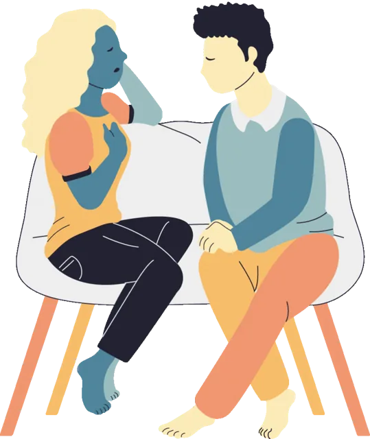
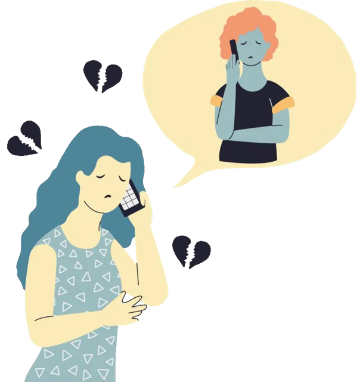
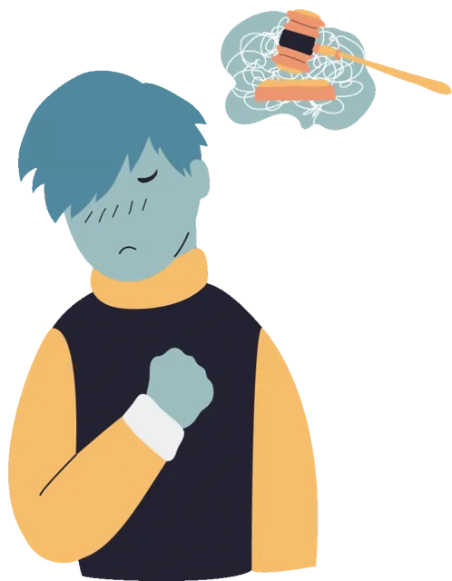
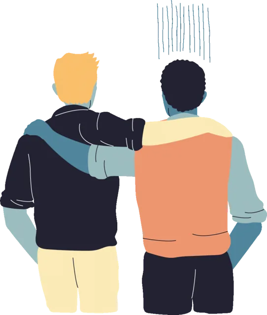

認識網路性剝削的類型與警示徵兆，學會保護自己、遇到時怎麼應對與求助，以及如何陪伴身邊的人。
公埔國小 生教訓育組 張奕軒老師
網路性剝削有四種類型。點一下卡片，看看每一種是什麼。

網路性剝削往往從細微的警示徵兆開始。了解這些危險情境，有助於及早辨識風險、保護自己與他人的安全。點亮每一個警示燈：
先想一想是哪一個警示徵兆，再點開答案。
保護自己的五個步驟。點一下卡片，看看要怎麼做。

若遭遇網路性剝削或性勒索，請保持冷靜，不要獨自面對。以下是保護自己的重要步驟，請依序採取行動，並盡快尋求信任的大人或專業機構的協助。

主動尋求可信任的大人、師長或專業機構協助，勇敢說出遭遇。
當身邊的人遭受網路性剝削，旁觀者與家人的態度與行動至關重要。以下是正確支持受害者的方式：
